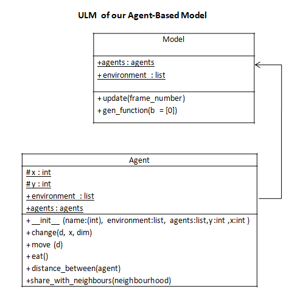
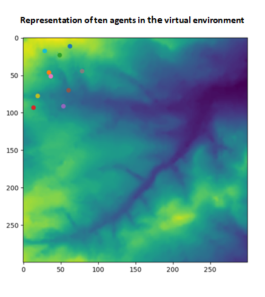

In our agent class, there are three main methods which simulate three possible behaviours for our sheeps : move in the meadow, eat grass and share their resources with their nearest neighbour. All functions which are in the agent class were documented (see the descriptions of functions with different parameters and return included in the code) and tested (fourty tests were performed).
In our script to run the model, we can found the code to initialyse the environment, to create the agents and to define a function which allows to create each picture of the animation.

In your console to:
The environment is provided by the csv file in.csv. The y- and x- coordinates of our agents is provided by the file data.html.
In your console, when you run the program, you can see a table which contains the name, the position (y- and x- coordinates) and the quantity of resources of initial agents. Carry_on true means that the function to create a picture for the animation is working. A stopping condition is added when all the agents have a quantity of resources which is greater than 100. In order to facilitate the reading of the program, each time that a new picture is created, you can see its frame number, its associated table with the name of each agent, their new position, their ressources and at the end the number of frame where the stopping condition is applied. You get an animation of this agent-based model and a figure representing our ten agents in the environment.
| name | y | x | store |
| 0 | 20 | 73 | 49 |
| 1 | 52 | 91 | 97 |
| 2 | 40 | 52 | 53 |
| 3 | 14 | 93 | 5 |
| 4 | 35 | 48 | 33 |
| 5 | 63 | 11 | 65 |
| 6 | 63 | 70 | 62 |
| 7 | 30 | 19 | 51 |
| 8 | 80 | 42 | 100 |
| 9 | 46 | 20 | 38 |

When we run the code ABMmodel.py, the code works only for one iteration and as visual output we obtained twice the first frame number whose the number is 0. To solve this problem, I tried to initiate the animation in this code : modificationcode.py. However, this code does not work. Only, two empty white windows, in which normally we have to see the animation and the figure, appear.